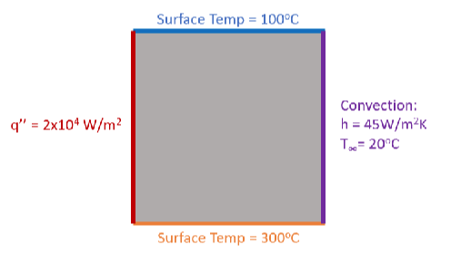
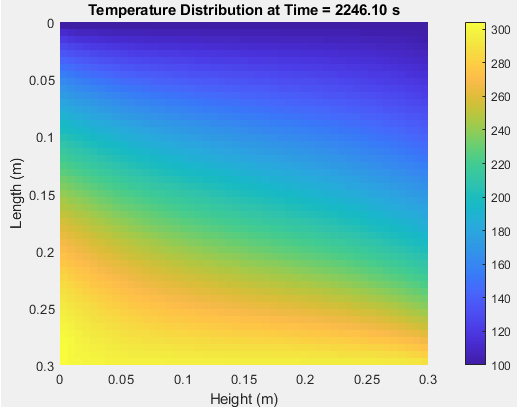

Sparky the Firefighter
Restoring a vintage animatronic dog to help support local firehouse
Learn moreThis is where all my projects are stored, feel free to message me about anything on this page
Projects serve as the crucible within which theoretical knowledge is tempered by practical experience, a fundamental component in the maturation of any engineer. They act as tangible demonstrations of our ability to navigate the complexities of design, problem-solving, and innovation. Each project, whether it culminates in success or offers valuable lessons from its shortcomings, contributes significantly to our professional growth. They allow us to manifest our ideas into physical realities, offering a canvas to showcase our skills, creativity, and adaptability to challenges. Moreover, projects encourage collaborative teamwork, resilience in the face of unexpected obstacles, and the continual application of emerging technologies. In essence, they are not just milestones of learning but also stepping stones towards the pinnacle of engineering expertise.
Restoring a vintage animatronic dog to help support local firehouse
Learn more
In the heart of my senior year at the University of Delaware, as a mechanical engineering student with a passion for aerospace, I've taken on an invigorating challenge: resurrecting the Indian River Fire Company's animatronic dog and firetruck. This project is not just a repair job; it's a revival of a community icon that has been silent for too long.
The task at hand is complex. We're dissecting and reworking a system that's a blend of early '90s technology and layers of modifications. This animatronic firetruck, with its myriad of features like a differential drive, actuated movements, and a remote audio system, is a puzzle of engineering marvels. But it's a puzzle I am actively solving.
Currently, I'm deep in the trenches of this project, wrestling with tangled wires and outdated components. The key challenge? Upgrading the obsolete 75MHz transmission system to a more reliable 2.4GHz transmitter, ensuring longevity and efficiency. Simultaneously, I'm troubleshooting and replacing the central electronic controller, the heart of this animatronic machine.
This undertaking is more than a university project; it's a commitment to reviving a vital tool for community engagement and fire safety education. Every step in this process is a learning opportunity, aligning perfectly with my interests in engineering and problem-solving. As I progress, I'm not just applying theoretical knowledge from my coursework; I'm gaining invaluable hands-on experience that's shaping my future as an engineer.
I'm dedicated to seeing this project through to the end, ensuring that the Indian River Fire Company's animatronic mascot returns to its role as a beloved and functional part of their community outreach. Stay tuned for more updates as I continue this challenging yet rewarding journey.
.png)
Creating an airplane to compete in ASAE Competition, with smaller glider attachment.
Learn moreThe SAE International Aero Design East Advanced Class competition, scheduled for March 8-10, presents a challenging yet stimulating opportunity for engineering teams to innovate in aerospace technology. The primary objective of this competition is to design a multifaceted system capable of simulating wildfire combat operations. This involves deploying a Ground Transport Vehicle (GTV) from a Powered Autonomous Delivery Aircraft (PADA), which in turn is released from a larger Primary Aircraft (PA). The PA also carries a water payload, integral to the mission's success.
.png)
The scope of the project revolves around designing, building, and operating a vehicle system that meets these complex requirements. This encompasses various engineering and design tasks:
Fuselage Design and Integration: The fuselage, serving as the central body of the aircraft, must house all control mechanisms, support the payload, and connect the wings and tail. It is also responsible for carrying the PADA. The design includes manufacturing landing gear and wing integration, ensuring internal accessibility for control system installation and payload removal.
Wing and Tail Engineering: The wings are crucial for generating sufficient lift for takeoff, considering the aircraft's weight. The tail aids in stability, countering the moments acting on the aircraft. Control surfaces like ailerons and flaps are essential for steering and altering the center of lift.
.png)
Primary Aircraft (PA) Requirements: The PA must carry a 4lb water payload and the PADA, capable of releasing it mid-flight.
Powered Autonomous Delivery Aircraft (PADA): The PADA carries parts for the GTV and must autonomously navigate to two types of targets—one marked by GPS and the other by color.
Ground Transport Vehicle (GTV): This manually controlled vehicle carries a water payload and is assembled post-delivery by the PADA.
Testing encompasses three modules: the Ground Station with a Data Acquisition System (DAS), the PA/PADA, and the GTV. The DAS includes mission planning software and altimetry tools, while the aircraft systems incorporate Pixhawk Flight Controllers, Radiolink AT10 Transmitters, and specific safety measures like SAE power limiters and arming plugs. The GTV, based on a commercial STEM RC Car Kit, must transport 2lbs of water to a designated target.
Construction involves assembling pre-manufactured components, primarily sourced from RC hobby sites and online marketplaces. Mounting these components requires a combination of Velcro and fasteners, particularly for high-torque elements like servo motors and engines. The design also incorporates extended wiring with shrink-wrapped extensions and precise positioning of parts.
In summary, this project represents a comprehensive endeavor in aerospace engineering, demanding a synthesis of design, mechanical, and electronic skills. It not only tests the team's ability to innovate within stringent constraints but also provides a real-world application scenario, mirroring the complexity and demands of modern aerospace challenges.

Creating machine that holds, fills, and caps pill bottles.
Learn more
In this detailed portfolio project, I will guide you through the development of a compact pill bottling machine designed for small-batch vitamin and supplement manufacturers. This project was to design, manufacture, and test a compact, automated pill bottle filling system for small batch manufacturers that includes conveyance, pill filling, and capping operations.
The sponsors for this project are two regional manufacturing firms, Norwalt Design (Randolph, NJ) and Omega Design (Exton, PA). The sponsors for this project have tasked the team to develop a compact frame pill bottle filling station to extend their product lines. The target end user for this system will be small-batch vitamin and supplement manufacturers that only require the packaging of their products. One of the constraints that were provided by the sponsors was the frame. The frame needed to be 20”X20”X40” and constructed out of 80-20 aluminum extrusion. This constraint was put in place with the target consumer in mind. Keeping the size on the smaller size allows the small batch vitamin and supplement companies to have more options with set up and has minimal effect on their existing infrastructure. The use of the 80-20 extrusion also has excellent benefits. It is a sturdy base for the structure and allows more extrusion or custom parts to be mounted anywhere along the extrusion. This is very helpful when going through the prototyping phase since it permits certain dimensions to not be as critical and then allows the team to optimize reliability.

When touring Norwalt and Omega concepts were learned like the Vacuum suction cups that would allow for easy grabbing of objects such as a pill bottle cap. Another interesting mechanism was the rotary gear wheel which would be effective for moving around pill bottles. After doing general benchmarking for ideas at Norwalt and Omega the team started searching the internet for specific ideas for each component of the system. The team found that conveyor belts and rotary tables were the best way to transport pill bottles from each machine to the next. Different types of motors, sensors, and hardware parts were explored to come up with the most efficient machines. The bottle dispensing machine was based on using gravity to drop each bottle down after a motor pushed it onto a conveyor belt. A very popular method for pill dispensaries was a rotating funnel that would accurately drop pills into a bottle. For capping, the team explored using a lead screw to tighten the caps onto the bottles. To improve these prototypes the team will order every part that is currently needed along with motors and sensors. The different components will then be made out of metal and tested to make sure they’re exactly what is needed. Overall, the team has gathered a lot of information and concepts from Norwalt, Omega, and online and has compiled it to create the best prototypes possible.
The 3 most prominent concepts that were taken into consideration were divided into three categories; Bottle dispensing, Bottle filling, and Bottle Capping.
Concept #1: Crank-Rocker Push Platform
This preliminary concept has a strong emphasis on conveyance. The Crank-Rocker Push Platform starts with a crank-rocker 4 bar linkage mechanism (which will satisfy the Grashof condition) connected to a motor rotating clockwise. There is a “push platform” connected to the rocker which can be grounded somewhere. Pill bottles will be suspended initially in a vertical transparent box, where gravity pushes them down - a bottom cover can be installed which opens upon the start of the machine to prevent downward motion initially. Pill bottles will slide down a ramp and onto a platform, where they are then bound between the ramp and the vertical wall attached to the other end of the platform. Each full rotation of the crank will cause the rocker (and thus the Push Platform) to make contact with a pill bottle on the platform, which will then push the bottle onto the conveyor belt. Two “rods” can be placed on each side of the conveyor belt-shaped so that they get closer together as they move down the conveyor belt - to help align the pill bottles before transitioning to the next part of the machine.

Concept #2: Rotary Pill Dispenser
This concept is designed for bottle filling. This design consists of a hopper that contains the pills. The hopper is mounted at an angle and has holes along the edge that are large enough for one pill to fit in. There is a shoot under the hopper that lines up with the holes, when a pill is in the hole it falls down the shoot and into either a pill bottle or holding area before being bottled. In the shoot, there will either be an infrared (IR) sensor or an ultrasonic sensor that will count the pills passing so the same amount will always be packaged.

Concept #7: Linear Capper
This preliminary concept focuses on bottle capping. This system requires the caps to be dropped and positioned onto the bottles and the system above screws the caps onto the filled pill bottles. The device that is responsible for making contact with the caps and screwing it into place is a circular piece of rubber that is connected to a motor that is connected to a platform on a lead screw. The lead screw puts a downward force onto the bottle caps when the motor with the rubber screws the caps on. After the cap is attached to the bottle, the lead screw brings up the entire capping mechanism to allow the filled/capped bottle to pass through and let the next empty bottle enter into position for the process to occur again.

The current product of the system is shown below. Starting in the back left, the pill bottles are loaded into the bottle chute and individually pushed out by a linear actuator onto the rotary table. Here the bottles go through 3 different stages along the rotary table in 90-degree increments moving at a pace of 45 degrees. First, the bottles go through a pill-filling dispenser that deposits 30 + 1 pill into each bottle using a chute/funnel mechanism with a gear. Then the bottles proceed to the cap dispenser, where another linear actuator pushes a cap onto the bottles, using a bottle guide to keep the cap placed directly on the bottle. Finally, the bottles are rotated under a capping system that uses a linear actuator to apply pressure to the caps. Along with the mechanical components is an Arduino button board, ABB for short, which manually allows for 2 directional movements of each mechanical part. Additionally, there is an e-stop on the breadboard that restarts all systems and stops them in place.


The initial bottle dispensing and conveyance system consisted of a crank-rocker mechanism as well as a conveyor belt. A motor would rotate a crank arm which would move a pusher to translate the bottles onto a conveyor belt. The conveyor belt would then carry the bottles to the rotary table. This first prototype underwent two important changes for the final design. The first is the replacement of the original crank-rocker mechanism that would push the bottles out and dispense them. Instead, a simpler linear actuator will be used to push the bottles out of the chute. This would take up less space and be more efficient. The second change to the original design was the elimination of the conveyor belt between the bottle dispenser and the rotary table. By removing the intermediate step of the conveyor belt, the team simplified the design and improved its reliability. The conveyor belt was able to be removed because it essentially served no purpose since the bottles could be dispensed directly into the rotary table. This not only removed the uncertainty of bottles falling on the belt but also made the system more compact and space efficient. Additional beam break sensors were added to the rotary table to allow the bottles to spin to the exact location needed.

The pill dispensing system has stayed relatively similar to the initial concept but does have some critical improvements. The first of which is the wall height of the spinning part of the dispenser. The initial prototype had a wall high of 1⁄2 inch, when doing a general function test the team noticed a limit on the number of pills that can be placed before they overflow. Increasing the wall height improved the situation but didn’t solve it completely as the team noticed on the second prototype, that the number of pills needed for all the bottles exceeded the limit of pills that could be preloaded without affecting the function. On the third prototype, a funnel was added just above the dispenser. This lets all the needed pills plus extras be loaded into it but only lets more pills be added up to a certain point that still allows for proper function. On the fourth prototype, a NEMA 17 motor was added on the same angled plane as the dispenser. A gear was then designed to slide over the side of the dispenser to interface with a gear on the motor. The gear ratio is 2:1, which means the motor can rotate exactly 4 times to dispense the required 30 pills per bottle. To ensure exactly 30 pills are dispensed, a break beam sensor was added in the shoot so that the pills fall through before landing in the bottle. The system's code keeps track of every time a pill breaks the sensor beam. Once 30 pills are reached, the pill dispenser stops spinning and allows the rotary table to move the bottle to the next station once the other subsystems have finished their processes.

The cap dispensing and capping system has been consistent throughout the initial prototyping stages up until its current state, consisting of a lead screw that will be motorized pushing caps onto the filled bottles. The design has come a long way with some needed improvements after testing physical prototypes though. Starting with a need for guide rails around the bottle, shown below in Figure 5. With the bottles sitting in the rotary table there was play with the orientation of the bottle caps and the capper would sometimes jam or have errors. To correct this, 3D-printed guides were fastened along the rotary table to restrict the movement of the caps. Additionally, the rotary table grooves were expanded to allow some movement of the bottles. Originally, the rubber plunger had a chance to unscrew the bottle caps as it was being raised due to normal force and restricted movement of the bottles, to fix this, the slots in the rotary table were widened and a second linear actuator was used to push the cap against the cap guide to counteract the frictional force from the lead screw’s gripper while it was moving up to it’s ready position.

A large emphasis was placed on how smooth each bottle transitioned from the bottle dispenser to the rotary table upon contact with the linear actuator. 10 trial runs (120 total empty bottles) were conducted with members of the team paying close attention to the transition state and its success or failure. Success was declared if an individual bottle was able to slide into an open slot on the rotary table without any issues, or without any human interference. Success was also declared if each bottle fell without interfering with the bottle below it from the 3D printed linear actuator bottle block.
10 trial runs (120 total empty bottles) were tested with success being declared so long as a bottle was filled with a total of 30 pills - no more, and no less. Members of the team paid close attention to the transition from the pill funnel and through the pill base, along with drop through the base, into the empty bottle for each pill. Close attention was also focused on the sensor’s ability to stop the system at proper times, when expected (i.e., when an empty bottle entered the right position directly underneath the pill base where break-beam sensors were placed.
10 trial runs (120 total caps) were tested with success being declared so long as a cap was fully tightened upon contact with the lead screw mechanism and the linear actuator rotational stopper. Members of the team paid close attention to whether the cap orientation from cap dispensing led to any tightening issues, and whether the linear actuator was able to successfully hold the cap as the lead screw reversed its direction in preparation for the next bottle.
Upon examination and extensive testing, two modes of failure showed worry. One rather likely place of failure is the pill dispensing mechanism. The Pill Funnel, a potential location of the failure, is susceptible to grinding over time, which can lead to a fracture in the rotation cylinder. This grinding can occur due to friction between the pills and the funnel's surfaces during the dispensing process. To address this issue, a possible solution is to introduce a lubrication system that reduces friction and wear on the surfaces. Additionally, optimizing the geometry of the funnel and selecting appropriate materials with enhanced durability can help mitigate the grinding and prolong the lifespan of the rotation cylinder. Furthermore, the pill dispensing mechanism can benefit from additional improvements. It would be beneficial to incorporate a feedback system that detects and rectifies any errors during the dispensing process. This can involve incorporating a feedback loop that cross-verifies the dispensing count with the number of pills that made it into the bottle, allowing for adjustments and ensuring accurate pill delivery.

In the case of the Bottle Cap Tightener, a common failure mode observed is cracking on the tightening mechanism due to torsion. This occurs when the twisting force applied to the caps exceeds the material's capacity to withstand it, leading to structural failures. To mitigate this problem, a redesign of the tightening mechanism may be necessary to distribute the torsional forces more effectively. Alternatively, considering alternative materials with higher torsional strength can enhance the overall robustness of the mechanism. Additionally, implementing a torque-limiting mechanism or incorporating sensors to monitor the torque applied during the tightening process can prevent excessive stress and potential cracking. Currently, to address this failure, a plastic weld was used to put the part back together, and has been holding throughout this fix. Due to the time constraints of the project, another iteration may be 3D printed with a denser infill to strengthen the device but a complete material swap would be ideal for permanent use.

By addressing these failure points and implementing the proposed solutions, the pill dispensing system can achieve higher reliability and accuracy in pill counting and bottle capping processes. Careful consideration of material selection, geometry optimization, lubrication systems, and feedback mechanisms will contribute to the development of a more efficient and dependable final design.
- 99% success rate, 10 trial runs (120 bottles tested)
Bottle Dispensing Details:
A 1% failure rate implies that roughly 1 bottle (really 1.2 bottles with 1% calculation) failed in the systems analysis. Members of the team decided that this error was due to how the bottles were loaded vertically in the bottle dispenser, as this had a very high success rate. Therefore, overall, this was deemed a successful subsystem.
- 97% Chance of getting 30 pills per bottle, 10 trial runs
- 3% Chance on +1 pill in a bottle
Pill Dispensing Details:
A 3% chance implies that roughly 108 extra pills total were added to all 10 trial runs in its entirety (out of a total of 3600 total pills from all trial runs). There were no issues with missing pills, and it is much more preferred to have a +1 error rather than a -1 error. It was concluded from members of the team that this +1 error is mainly due to how the pill base is oriented and how the pills are inserted into the funnel as the system begins, as there are times where one pill was able to sneak in if the pill counter was oriented in just the right position to allow for this to occur. Overall, a 3% error was more successful than not as a result of analysis
- Orientation of cap insertion created difficulties, 80% success rate, 10 trial runs, possible jamming of caps in vertical stacking orientation from lip
- To avoid this in the future, each bottle cap guide should have sharper shoulder fillets and should be trimmed down to prevent contact.
- 80% success rate, this is a result of Cap Dispensing. If the cap is not placed on properly then the capper has a difficult time spinning the cap. This is a direct result of the cap dispensing analysis and error from the cap dispensing analysis.
The scope of this project is to design, manufacture, and test a compact, automated pill bottle-filling system for small batch manufacturers that includes conveyance, pill filling, and capping operations. After testing and evaluating the final design (Figure 2), everything in the scope is completely fulfilled. The conveyance is satisfied by the rotary table that drives the whole assembly line. The pill-filling category is made up of two stages which include the pill bottle hopper and the rotary pill dispenser. The capping operation is composed of the cap pusher and the linear capper. All of these mechanisms are controlled by an Arduino mega with safety features built in, like an emergency stop button. Every main component of the design fits easily into the 20”x20”x 40” 80-20 frame. The $500 limit on outside parts was a constraint that was fulfilled by only spending $428.00. Every prototype in the pill-filling category has a 100% reliability factor; however, the cap dispensing mechanism is having a bit of trouble in this field with a cap getting jammed in 1 out of 50 attempts . The linear capper also has a 100% reliability factor depending on the cap dispensing mechanism dispensing the caps properly. Overall, the design satisfies every part of the original scope along with all of the metrics and constraints.

If the prototyping iterations continued into the summer and Fall of 2023, discussion and evaluation of the design validation would be addressed to optimize the time it takes the system to complete 12 filled bottles, along with any possibilities of jamming or error. The biggest priority would be addressing the camming of caps and making sure cap alignment was 100% as to allow the system to complete all 12 bottles, even without error. This would consist of possible redesigns of the bottle cap guide along the rotary table and the placement of the bottle cap chute and the way the linear actuator pushes caps onto the bottle. The second biggest priority would be redesigning the code to work simultaneously with each subsection when a bottle is detected at each station. This could be designed starting with mounting whisker or break-beam sensors at each station to detect the bottles allowing the system to update with each sensor and tell the code to activate multiple subsystems at once.
If the current design could be different from the first stages of concept generation and selection to the beginning of prototyping there are a few things the team would do differently. One of the largest setbacks that occurred through prototyping was the capping mechanism. The sub-system itself was fairly efficient for capping and with the final design could successfully cap the majority of bottles. The main issue lied in the time it took between steps to capp each bottle. If a different design was discussed and utilized the timing of the system could have been greatly improved, even allowing for the possibility of simultaneous code allowing the rotary table to be constantly moving.
A bike designed by sophomore me, fully created out of wood and hardware.
Learn moreThe primary objective of the Wooden Bike Frame Challenge, a key component of the Statics course at the University of Delaware, was to design and build a functional and safe wooden frame bike, specifically a "balance bike" similar to the historical "Dandy Horse". This project not only aimed to revitalize the tradition of mechanical engineering in bike design but also to showcase the innovative maker skills of the students. The end product was expected to be a full-scale prototype, foot-propelled, and capable of supporting an adult user. This task was not just about building a bike; it was about merging historical design with modern engineering techniques, emphasizing creativity, practical skills, and technical knowledge.
The project's requirements were stringent and multifaceted, focusing on both the design process and the final product. Key requirements included:
Material and Construction Constraints : The bike frame had to be constructed entirely from 1/2" thick plywood, using a limited amount of 1/4-20 hardware. The major frame pieces had to be cut from a single 4 ft x 4 ft plywood sheet using a CNC router, with manual carpentry allowing for minor modifications.
Integration and Safety : The incorporation of a pre-fabricated front steering column and 26" wheels was mandatory. The bike had to safely support a 200 lb user with a Factor of Safety (FOS) of 1.5.
Portability and Functionality : The design had to ensure that the bike could be disassembled to fit into a standard travel bike bag, with no brakes or drive systems, being purely foot-propelled.
Cost-Effectiveness and Aesthetics : The design needed to be economical, lightweight, easy to assemble, comfortable, stylish, and fast, meeting various user-centric priorities.
For Potential Failure #1 at the seat plate connection, the analysis shows the reactions at a pin support with the loads on the pin being Ax equal to 0, Ay at 300 lb, and a moment Am of 7107 lb/inch. The minimum Factor of Safety (FOS) calculated for this connection is 2.97, indicating a strong capacity to withstand applied loads and additional unexpected loads nearly three times higher than the maximum anticipated force without failing, which speaks to the conservative and safe design approach.
Potential Failure #2 relates to the front fork connection. The images reveal the loads on this pin to be Bx at 0, By at -537.08 lb, and a bending moment Bm of -14524.9 lb*inch. Here, the FOS is calculated to be 1.33, which while lower than the seat plate connection, still meets the design requirement of an FOS greater than 1. This ensures that the front fork can safely carry the expected loads plus a 33% margin for unexpected stresses.
These calculations are central to the design validation process, ensuring that the bike frame will be safe for use. The careful consideration of static loads and moments, along with the application of factors of safety, underlines the meticulous application of statics principles in engineering design, essential for a successful project outcome.


Designing a PID controller for a remote control car, maining proper speed as it navigates a scaled city.
Learn moreDesign a PID vehicle speed trajectory controller for a scaled (1:25) robotic car, which is used at the Information and Decision Science Lab’s Scaled Smart City (IDC). The car can be modeled using the simplified representation where m = 0.434 kg is the mass of the car, b represents the viscous friction, F is the force applied to the car, and v is the speed of the car. To achieve the correct step response the requirements are that the overshoot must be below 25%, the settling time must be below .2 seconds, and have less than a 10% steady-state error.
To determine the PID controller values, the first step is to identify the system. Given a diagram of the forces acting on the car seen in Figure 1, the equation of motion, seen in Equation 1, was derived.


Where v represents represents the velocity of the system, F is the force required to push the mass (m), and b is the viscous friction acting on the mass. Once we obtained that equation of motion, we used Laplace transformations to create a transfer function of the system. The open loop transfer function derived can be seen by Equation 2.

After deriving the open loop transfer function, the block diagram (Figure 2) involving the PID controller (Equation 3) was used to develop the closed loop transfer function seen by Equation 4.


Where Y(s) represents the output velocity of the system, R(s) represents the input velocity of the system, Vo(s) is the open loop output velocity, and Fo(s) is the open loop force required to push the car.
From the transfer function (Equation 4), identifying the characteristic equation was next. The characteristic equation derived can be seen in Equation 5.

To determine the PID controller values, the first step is to identify the system. Given a diagram of the forces acting on the car seen in Figure 1, the equation of motion, seen in Equation 1, was derived. To arrive at the gain values, the next step in the process was to compare the denominator of the ideal transfer function shown below in Equation 6.

To finally achieve the gain values for the system, the viscous friction needed to be identified. The open loop transfer function (Equation 2) was analyzed in MATLAB to obtain a step response resembling that of Figure 3 shown below.

Using the found value of viscous friction (b = 4.5) and comparing it with the characteristic equation, it was found that the gain values of the system are D = 0, P = 35.43, and I to be 3436.
RESULTSThe results gathered from the Information and Decision Science Lab’s Sealed (1:25) Smart City conclude that the PID gain values were not accurate to achieve the desired overshoot, settling time, and steady-state error. When going to test the values the car overshot the ideal speed by 53%, did not settle for 1 second, and had a steady state error of 0.50. Testing in MATLAB the overshoot was predicted to be 19%, and the settling time was 0.1 seconds, with no steady-state error. The two speeds tested were 0.4 m/s and 0.3 m/s and for both the response settled around 0.6 m/s.


The ideal step would have no overshoot and settle at 0.4m/s. Looking at the ideal step response graph, you can see how the gain values are scaled. The ideal and real charts both have an approximately similar rising time, which could be caused by a similar ratio of the proportional term to the integral term, with the only difference being the lack of a derivative term in the real trial.
PATH FORWARDMoving forward, what should be redone is the analysis of the original transfer function and a reworking of the algebra behind achieving the gain values. The conclusion of this term project proved the importance of each of the terms in the PID control. The zeroed derivative term allows for an extreme amount of overshoot since the controller has no damping force. Therefore, moving forward, team 9 is going to re-evaluate the given problem and find a correct solution that incorporates the derivative term.
An assortment of intricate movie props, such as rings, staffs, swords, and a guitar.
Learn moreI finished a 3D printed Greatsword from "Elden Ring." Using my Ender 3 Pro, it took a week to print all 28 parts, fitting within the printer's 220x220x250mm capacity. Post-print, I spent another week on assembly, reinforcing the structure with three galvanized steel rods. I designed the model in Blender, choosing a 0.2mm layer height and a 0.6mm nozzle for the right balance of strength and material efficiency. At six feet, it's to scale, hefty, and despite its size, it's assembled to handle like it belongs in the game—minus any fantasy features.

Utilizing my Ender 3 Pro, I meticulously 3D printed a full-scale replica of Stormbreaker from the Avengers series. The entire piece was printed in multiple sections over the course of a week, designed specifically to fit within the printer's maximum capacity of 220x220x250mm. After printing, I dedicated an additional week to assemble the parts, inserting a steel rod through the center for stability and a realistic weight. The model was crafted in a CAD program with precise attention to the intricate details of the weapon, choosing a 0.2mm layer height for a fine finish, and a 0.6mm nozzle to ensure structural integrity. To complete the look, I applied a metallic spray paint to the axe head and a dark wood finish to the handle, achieving a movie-accurate appearance that feels like it's straight out of the hands of Thor himself.
In the latest foray into 3D printing, I've turned my attention to the iconic rings from the Lord of the Rings series, fabricating two replicas with my reliable Ender 3 Pro. The process involved careful calibration to accurately capture the subtle engravings and contours of each ring. Over a couple of days, these rings were printed with a 0.2mm layer height for fine detail, using a 0.4mm nozzle to ensure the engravings were clear and precise. Post-printing, the rings were finished with a smoothing technique to eliminate any layer lines, then one was colored in a vibrant green and the other in a muted ivory using specialty filaments to mimic the distinct tones of the legendary artifacts. These pieces are not only testaments to my 3D printing skills but also a nod to the craftsmanship of fantasy jewelry making.
Branching into the realm of musical instruments, I've recently completed a 3D printed electric guitar body, pushing the boundaries of traditional design. This guitar body was printed with an Ender 3 Pro over an extensive period, carefully divided into multiple sections to optimize the printer's capacity. The design boasts a unique, voronoi-patterned framework, chosen not only for its aesthetic appeal but also for its potential acoustic properties. After printing, I assembled the sections, reinforcing the structure internally to ensure it could withstand the tension of guitar strings. The vibrant green finish was achieved through a meticulous painting process, providing a bold statement piece that blurs the lines between music and technology. This guitar body represents a fusion of engineering and artistry, encapsulating the innovative spirit of modern 3D printing.

Designing a machined steel fracture plated similar to surgical designed femur plates.
Learn moreThe primary aim of this project is to design an innovative femur fracture plate that offers enhanced strength, durability, and compatibility with the human body. The project will involve the use of computer-aided design (CAD) software for the design phase, followed by manufacturing a prototype using advanced techniques like 3D printing. The final phase will include testing the prototype's mechanical properties and failure limits using a hydraulic press.


I designed a fracture plate prioritizing maximum comfort and optimal load-bearing capacity. My design features eight screw holes, tailored for M4 Flat Head Machine Screws, a standard in femur fracture plate surgeries. Each hole has a loose fit, a deliberate choice to give surgeons flexibility during screw insertion. The plate's sides feature scalloped edges, aligned with the screw holes. This design, which I crafted, not only enhances aesthetics but also reduces bone contact area. There are 16 scallops in total, eight on each side. Each scallop begins with dimensions of about 10.07 mm in length and 1.93 mm in height, forming an arc, then narrows down at a 70-degree angle due to a ball cut. A key feature in my design is the central channel running along the plate's length. This channel reduces the contact surface area with the bone significantly, without compromising the plate's strength. It measures about 4.03 mm in width and 0.78 mm in height, forming a continuous arc across the plate's length.
Calculations were performed using a loading force of 100N, as the patient is not going to put the full force of their body weight on a newly broken bone. The average length of a femur is 480mm, and the average break location is halfway down the femur, so those distances were used to calculate internal forces. This ended up giving a parallel distance of approximately 62.12mm. The critical point of the fracture plate would be in the middle, right where the fracture is, as all other places have both the support of the bone and the plate, so it is unlikely that they will fail first. The main concern for the plate was deformation from bending, so that is what was determined by the calculations. The total stress calculated was 588.894MPa for 100N, and 4711.913MPa for 800N, although hopefully the patient would have something so they would not need to put the full force on their broken leg.

Various programs coded by me, involing excel, phyton, html, css, and matlab.
Learn moreThe primary objective of this project is to develop a robust and accurate numerical model using explicit, two-dimensional finite difference methods to simulate and analyze the temperature distribution within a 30x30 cm square plate of aluminum (2 cm thick) under given boundary conditions. This model aims to predict the temperature variation across the plate both spatially and temporally, starting from an initial uniform temperature of 20°C.
A diagram detailing the boundary conditions of the aluminum plate as provided by the project prompt. The applied flux is applied evenly across the entire side surface and the detailed surface temperatures also describe their entire respective surfaces.
To simulate the nodes and make sure that the code is accurate we started with a 3x3 grid with the specified boundary conditions. When we tried to simulate a 4x4 grid, the code would provide a 3x3 because the way it is written, a center node is required but the data is still accurate to a 4x4 grid. The initial 3x3 graph can be found in Appendix B. Once we could be sure that the code is accurate we increased the nodes to 50x50 for the final resolution resulting in the graph
The code starts by defining the grid parameters (length and height of the plate, and grid spacing in both directions), physical parameters (thermal conductivity, density, specific heat capacity, and thermal diffusivity of aluminum), and boundary conditions (surface temperatures and heat fluxes at top and bottom, heat transfer coefficient at right, and surrounding temperature). Next, the time step is calculated based on the grid spacing and thermal diffusivity, and the number of time steps is set. The initial temperature at each node is set to the surrounding temperature, except for the center node which is set to the average of its neighboring nodes. Then, the temperature at each node is updated over time steps using an explicit finite difference method. The temperature at each interior node is updated based on the temperatures of its neighboring nodes using the heat equation, while the center node temperature is updated separately. The boundary conditions are set for each time step, and the temperature distribution is plotted at certain time steps using a mesh grid and a surface plot. Overall, the code simulates the temperature distribution in an aluminum plate with given physical properties and boundary conditions using an explicit finite difference method, and provides a visualization of the temperature distribution over time.
The goal is to apply Computational Fluid Dynamics (CFD) tools for visualization, analysis, and quantification of flow characteristics over a chosen aerodynamic object, enhancing practical CFD application in relevant areas. This involves the selection and detailed presentation of an aerodynamic model, including rationale and specific features like airfoil type, coupled with the calculation and interpretation of the Reynolds and Mach numbers to determine flow state and compressibility. Flow visualization using tracer tools will analyze flow behavior, focusing on attachment and rotational structures. Pressure and velocity contour plots at the object's centerline will be created and interpreted to identify key features. Finally, the project requires computing non-dimensional force and moment coefficients, determining the center of pressure, and discussing its importance in aerodynamic design, ensuring individual integrity in all analyses while permitting collaboration for model selection and simulation setup.
The study of aerodynamic properties remains fundamental to advancing the field of aerospace engineering. This project delves into an in-depth analysis of a selected aerodynamic model, examining its structural features and inherent flow characteristics. Through a series of tasks, the investigation evaluates critical parameters such as Reynolds and Mach numbers, flow tracers, flow contours, and aerodynamic forces. Emphasis is placed on visual representation of the model and its behavior, accompanied by rigorous calculations to validate the observations. The outcomes of this investigation aim to provide insights into the model's performance and potential applications in real-world aerospace scenarios.
The model central to this study is the Eppler 423 wing profile, distinguished by its unique aerodynamic characteristics. Measuring 48 inches in length and having a 14-inch chord, this wing yields an aspect ratio tailored for optimal flight dynamics. The Eppler 423 airfoil, with its superior lift-to-drag ratio, stands out as a favored selection in aerospace endeavors. The rationale behind adopting the Eppler 423 is twofold: firstly, its well-recognized standing within the aerospace sector, and secondly, the intent to delve deeper into the aerodynamic intricacies it exhibits under varied flow regimes. Utilizing a wing with a 48-inch span is strategic, ensuring that the experimental setup is both representative and primed for precise data collection and analysis. Furthermore, this wing is a key element in the ASAE senior design project, underscoring its relevance and importance in contemporary aerospace studies.
With a Reynolds number of 372726.44, which far exceeds the general threshold of 4000, the flow characteristic is distinctly turbulent. Furthermore, the calculated Mach speed stands at 0.0391. Given this value is substantially below the standard benchmark of 0.3 for incompressibility, the flow is confidently characterized as incompressible. This comprehensive evaluation offers crucial insights into the aerodynamic behavior of the wing profile under the stipulated conditions.
.png)
The pressure contours, characterized by the series of lines and varying colors, highlight areas of different pressure magnitudes around the airfoil. The closely spaced contour lines in some regions suggest steep pressure gradients, indicating rapid changes in pressure. This is especially evident in the region where the colors transition from green to red, denoting a swift shift from moderate to high pressure. This is likely the area where the airflow separates from the airfoil surface, creating a pressure differential. The regions of high pressure, marked by the red and orange hues, are typically found on the windward side (or the front) of the airfoil. This is where the incoming air molecules are compressed as they collide with the airfoil's leading edge. Conversely, the blue hues depict areas of lower pressure, which are generally located on the leeward side (or the back) of the airfoil. This pressure reduction on the back side is due to the air's accelerated flow, governed by Bernoulli's principle. The yellow surrounding region, with its relatively consistent pressure values, signifies the undisturbed flow away from the airfoil, suggesting that its influence on the airflow diminishes with distance. The presence of these varying pressure zones around the airfoil indicates the generation of lift. The pressure difference between the upper and lower surfaces creates an upward force, allowing the airfoil to achieve lift. The magnitude and distribution of these pressure differences can provide insights into the efficiency and stability of the airfoil in generating lift.
.png)
The image displays a computational fluid dynamics (CFD) simulation of airflow around an airfoil. The velocity contours, indicated by the color gradient and streamline patterns, show the distribution of airspeeds. The tight clustering of lines towards the top rear suggests a high-velocity gradient, likely where the flow accelerates significantly. The red region at the top of the airfoil represents the highest velocity magnitudes, as denoted by the peak value on the color scale. This is characteristic of the flow behavior just above the surface, where the boundary layer is the thinnest and the speed is greatest before it potentially separates from the surface. The wide-spaced green contours represent areas of lower velocity magnitude, typical of the freestream velocity away from the airfoil's influence. The smooth transition of hues from green through yellow to red indicates a gradual increase in velocity as the flow approaches and moves over the airfoil. Overall, the pattern of velocity around the airfoil is a key factor in the generation of aerodynamic forces such as lift. The higher velocities over the top surface compared to the bottom suggest lower pressure on the top, according to Bernoulli's principle, thus contributing to lift. The effectiveness of the airfoil design in managing these velocities can be inferred from such simulations, which is crucial for optimizing performance for aerospace applications.
.png)
The script stands out for its capability to access and analyze a comprehensive database of over 1600 airfoils, enabling a thorough and detailed comparison to select the best airfoil for specific aerospace applications. Here's an expanded view incorporating this aspect:
Extensive Airfoil Database: The script connects to an online database containing over 1600 airfoil profiles, available at 'https://m-selig.ae.illinois.edu/ads/coord_database.html'. This vast collection includes a wide variety of airfoil shapes, each potentially suited to different aerodynamic needs.
Automated Data Retrieval and Analysis: Utilizing the BeautifulSoup library, the script efficiently parses this extensive database to extract data links for each airfoil. It then processes each airfoil by extracting its coordinates and computing its aerodynamic performance based on the input parameters.
Concurrent Processing for Efficiency: The script employs concurrent.futures.ThreadPoolExecutor for handling multiple airfoils simultaneously. This approach significantly speeds up the analysis process, making it feasible to evaluate such a large dataset in a reasonable timeframe.
Optimal Airfoil Selection: After processing, the script compares the performance metrics of these 1600+ airfoils. It evaluates them based on criteria like lift-to-drag ratio, lift coefficient, and drag coefficient, ultimately pinpointing the most efficient airfoil under the given conditions.
Result Visualization and Information: Once the best airfoil is determined, the script not only visualizes its shape but also fetches and displays an image, if available. It provides additional reference information, giving users a comprehensive understanding of why this particular airfoil is optimal.
.png)
.png)
In summary, this script is a powerful tool in aerospace engineering, especially for projects like the SAE Aero Design competition. It leverages an extensive database of airfoils, applies rigorous computational methods to evaluate their performance, and identifies the most suitable airfoil for specific flight conditions and design objectives.

Various programs coded by me, involing excel, phyton, html, css, and matlab.
Learn more